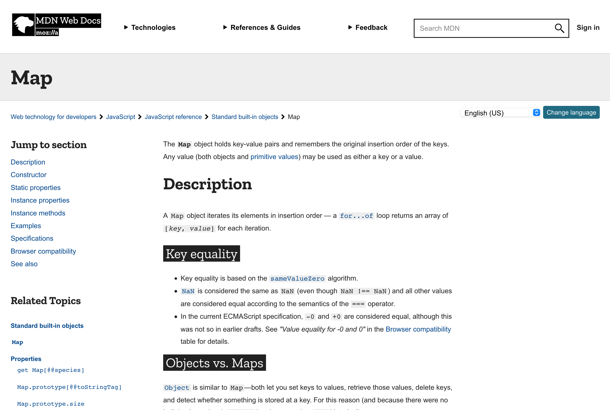
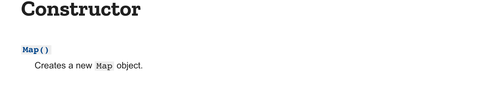
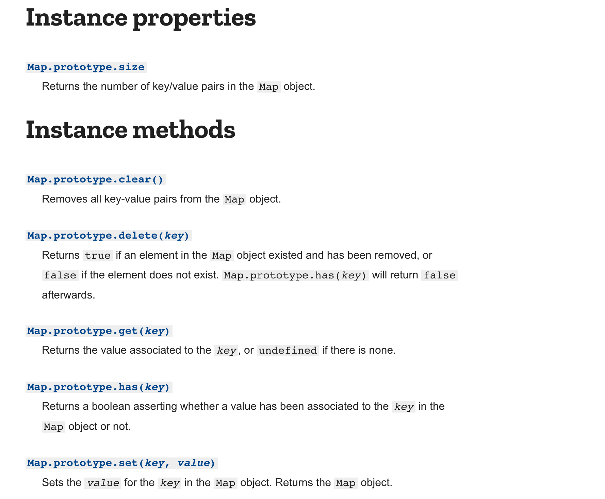

Basic TypeScript
Objectives
- Learn basic JavaScript and TypeScript syntax and semantics
- Transition from writing Python to writing TypeScript
Getting started with TypeScript
In Praxis Tutor in Visual Studio Code, complete the first two categories: Basic TypeScript and Numbers & Strings. (The Getting Started page guides you through setting up Praxis Tutor if you haven’t already.)
- You may want to make the Praxis Tutor pane larger. Make it wider by dragging the splitter bar on the right edge of the Explorer pane, and make it taller by making sure all the other tabs in the Explorer pane are collapsed, as shown in the image below. (Later, when you are not using the Tutor, you can collapse its tab so that you can use the Explorer pane to see other files instead.)
After you have done these categories, your Praxis Tutor pane in Visual Studio Code should show the categories fully checked off with a green checkmark:

Snapshot diagrams
It will be useful for us to draw pictures of what’s happening at runtime, in order to understand subtle questions. Snapshot diagrams represent the internal state of a program at runtime: its stack (methods in progress and their local variables) and its heap (objects that currently exist).
Here’s why we use snapshot diagrams in 6.102:
- To talk to each other through pictures (in class and in team meetings).
- To illustrate concepts like immutable values vs. unreassignable references, pointer aliasing, stack vs. heap, abstractions vs. concrete representations.
- To pave the way for richer design notations in subsequent courses. For example, snapshot diagrams generalize into object models in 6.104 [formerly 6.170].
Although the diagrams in this course use examples from TypeScript, the notation can be applied to any modern programming language, e.g., Python, Java, C++, Ruby.
The simplest kind of snapshot diagram shows a variable name with an arrow pointing to the variable’s value:
let n: number = 1;
let x: number = 3.5;When we want to show the type of the value, or show more of its internal structure, we use a circle labeled by its type:
let val: BigInt = BigInt("1234567890");Snapshot diagram syntax is intended to be flexible, not necessarily showing all the details all the time, so that we can draw simple diagrams that focus on particular aspects of the program state that we want to discuss.
For example, the diagrams to the right are all reasonable ways to display a string variable in a snapshot diagram.
let s: string = "hello";We may use different diagrams in different contexts. Sometimes we care about the particular value of the string, and sometimes we don’t. Sometimes we want to emphasize that a string is an object value, and sometimes that isn’t relevant.
When we want to show more detail about an object value, we will write field names inside the object circle, with arrows pointing out to their values.
let pt: Point = new Point(5, -3);For even more detail, fields can include their declared types.
Mutating values vs. reassigning variables
Snapshot diagrams give us a way to visualize the distinction between changing a variable and changing a value:
When you assign to a variable or a field, you’re changing where the variable’s arrow points. You can point it to a different value.
When you change the contents of a mutable object – such as an array – you’re changing its value by changing the references inside it.
Reassignment and immutable values
For example, if we have a string variable s, we can reassign it from a value of "a" to "ab".
let s: string = "a";
s = s + "b";The string type is an example of an immutable type, a type whose values can never change once they have been created.
Immutability is a major design principle in this course, and we’ll talk much more about it in future readings.
In a snapshot diagram, when we want to emphasize the immutability of an object like a string, we draw it with a double border, as shown in the diagram above.
Mutable values
By contrast, an array is a mutable object, and it has methods that change the value of the object:
let arr: Array<string> = ["a"];
arr.push("b");The difference between mutability and immutability will play an important role in making our code safe from bugs.
Unreassignable references
TypeScript also gives us immutability for references: variables that are assigned once and never reassigned.
To make a reference unreassignable, declare it with the keyword const:
const n: number = 5;In this code, n can never be reassigned; it will refer to the value 5 for its entire lifetime.
If the TypeScript compiler isn’t convinced that your const variable will only be assigned once at runtime, then it will produce a compiler error.
So const gives you static checking for unreassignable references.
In a snapshot diagram, when we want to focus on reassignability, we will use a double-arrow for unreassignable references.
The diagram to the right shows an object whose id never changes (it can’t be reassigned to a different number), but whose age can change.
Note that we can have an unreassignable reference to a mutable value whose value can change even though we’re pointing to the same object:
const arr: Array<string> = ["a"]
arr.push("b");We can also have a reassignable reference to an immutable value where the value of the variable can change because it can be re-pointed to a different object:
let s: string = "a";
s = "ab";Double lines help emphasize the unchangeability of parts of a snapshot diagram. But when reassignability or mutability is obvious, or not relevant to the discussion, we will keep the diagram simple, and just use single-line arrows and object borders.
reading exercises
Here is a function that mutates and reassigns its parameters:
function f(s: string, arr: Array<string>): void {
s.concat("b");
s += "c";
arr.push("d");
}Suppose it is called like this:
let t: string = "a";
let tarr: Array<string> = [t];
f(t, tarr);After this code runs, what sequence of characters does t refer to?
At the same point, what array of strings does tarr refer to?
(missing explanation)
Note that this page doesn’t keep track of the exercises you’ve previously done. When you reload the page, all exercises reset themselves.
If you’re a registered student, you can see which exercises you’ve already done by looking at Omnivore.
Arrays, Maps, and Sets
A TypeScript Array is similar to a Python list.
An Array contains an ordered collection of zero or more objects, where the same object might appear multiple times.
We can add and remove items to and from the Array, which will grow and shrink to accommodate its contents.
* Note that if ( ! lst ) ... does not work in TypeScript to test whether an array is empty.
This is an important difference from Python.
TypeScript arrays, maps, and sets are always truthy, even
when they are empty.
In a snapshot diagram, we represent an Array as an object with indices drawn as fields.
This array of cities might represent a trip from Boston to Bogotá to Barcelona.
A Map is similar to a Python dictionary.
In Python, the keys of a map must be hashable.
TypeScript has an even stricter requirement that we’ll discuss when we confront how equality works between objects; for now, it’s safest to use only strings and numbers as keys, rather than arbitrary objects.
In a snapshot diagram, we represent a Map as an object that contains key/value pairs.
This turtles map contains Turtle objects assigned to string keys: Bob, Buckminster, and Buster:
A Set is an unordered collection of zero or more unique objects.
Like a mathematical set or a Python set – and unlike an Array – an object cannot appear in a set multiple times.
Either it’s in or it’s out.
Like the keys of a map, the objects in a Python set must be hashable.
Similarly, the TypeScript Set should be used with a type that is safe for use as the key of a Map, which (for now) means strings and numbers.
| TypeScript | description | Python |
|---|---|---|
s.has(e) |
test if the set contains an element | e in s |
s.add(e) |
add an element | s.add(e) |
s.delete(e) |
remove an element | s.remove(e) |
s.size |
count the number of elements | len(s) |
In a snapshot diagram, we represent a Set as an object with nameless fields.
Here we have a set of numbers, in no particular order: 42, 1024, and -7:
Literals
Python provides convenient syntax for creating lists:
letters = ["a", "b", "c"]fruits = {"apple": 5, "banana": 7}TypeScript has the same syntax for array literals:
let letters: Array<string> = ["a", "b", "c"];But the syntax for creating a Map literal is a bit more involved.
The best approach is an array of key-value pairs, like this:
let fruits: Map<string, number> = new Map([
["apple", 5],
["banana", 7],
]);Generics: declaring Array, Set, and Map variables
Unlike Python collection types, with TypeScript collections we can restrict the type of objects contained in the collection. When we add an item, the compiler can perform static checking to ensure we only add items of the appropriate type. Then, when we pull out an item, we can be confident that its type will be what we expect.
Here’s the syntax for declaring some variables to hold collections:
let cities: Array<string>; // an Array of strings
let numbers: Set<number>; // a Set of numbers
let turtles: Map<string, Turtle>; // a Map with string keys and Turtle valuesTypeScript offers an alternative syntax for declaring an Array type, putting square brackets after the element type:
let cities: string[]; // also an Array of stringsWe will generally use the Array<T> form, to make the meaning of the code clearer, but the T[] form is fine too.
Note that Array<T> and T[] mean exactly the same thing in TypeScript (unlike other languages you may have encountered).
Iteration
A very common task is iterating through our cities/numbers/turtles/etc.
for city in cities:
print(city)
for num in numbers:
print(num)
for key in turtles:
print("%s: %s" % (key, turtles[key]))TypeScript provides a similar syntax for iterating over the items in arrays and sets, but using of rather than in:
for (const city of cities) {
console.log(city);
}
for (const num of numbers) {
console.log(num);
}TypeScript also allows let city of cities, but const is preferable because it prevents you from inadvertently reassigning city in the body of the loop.
TypeScript doesn’t allow declaring the type of the variable (e.g. with const city: string of cities); the type of city is inferred automatically from the element type of cities.
Warning: avoid using for...in in TypeScript.
It’s unfortunately legal syntax, but it does a very different thing than you expect.
With an array ["a", "b"], for example, for...in will not loop over the elements of the array ("a", "b"), but instead the indices of the array (0, 1).
With a set or map, for...in quietly does nothing at all, leading you to think that the set or map is empty when it’s not.
Avoid for...in, and use for...of instead.
We can also iterate over the keys or values of a Map as we did in Python:
for (const key of turtles.keys()) {
console.log(key + ": " + turtles.get(key));
}
for (const value of turtles.values()) {
console.log(value); // prints each Turtle
}
for (const [key, value] of turtles.entries()) {
console.log(key + ": " + value);
}Under the hood, this kind of for loop uses an Iterator, a design pattern we’ll see later in the class.
Warning: be careful not to mutate a collection while you’re iterating over it. Adding, removing, or replacing elements disrupts the iteration and can even cause your program to crash. We’ll discuss the reason in more detail in a future class. Note that this warning applies to Python as well. The Python code below does not do what you might expect:
numbers = [100, 200, 300]
for num in numbers:
numbers.remove(num) # danger!!! mutates the array we're iterating over
print(numbers) # array should be empty here -- is it?Iterating with indices
If you want to, TypeScript provides different for loops that we can use to iterate through an array using its indices:
for (let ii = 0; ii < cities.length; ii++) { // analogous to Python code `for ii in range(len(cities))`
console.log(cities[ii]);
}Unless we actually need the index value ii, this code is verbose and has more places for bugs to hide (starting at 1 instead of 0, using <= instead of <, using the wrong variable name for one of the occurrences of ii, …).
Avoid it if you can. If you do need the index as well as the element value, you can use entries() instead (which is analogous to enumerate() in Python):
for (const [ii, city] of cities.entries()) {
console.log(ii + ": " + city);
}This can prevent some of the bugs mentioned above, but you should still prefer to avoid iterating over indices unless you actually need them, even with entries().
Missing values in maps and arrays
If you try to use get() to get a key that isn’t defined, then it returns the special value undefined:
const prices: Map<string, number> = new Map();
prices.set("apple", 5);
prices.get("apple") // returns 5
prices.get("banana") // returns undefinedSimilarly, if you index into an array with an illegal index, the result is undefined:
const fruits: Array<string> = ["apple", "banana"];
fruits[0] // returns "apple"
fruits[1] // returns "banana"
fruits[2] // returns undefined
fruits[-1] // returns undefinedSurprisingly, JavaScript arrays are actually sparse: you can place a new element at an arbitrary index, not just in a contiguous sequence numbered from 0.
Any unassigned indexes return undefined.
For example:
const arr: Array<string> = [];
arr[2] = "x";
arr[0] // returns undefined
arr[1] // returns undefined
arr[2] // returns "x"
arr[3] // returns undefinedArray sparsity is almost never used by TypeScript/JavaScript programmers.
Unless explicitly documented otherwise, the type Array<T> means that the array is dense, with contiguous indices numbered from 0, just like arrays and lists in other languages.
reading exercises
TypeScript Maps work like Python dictionaries.
let treasures: Map<string, number> = new Map();
let x: string = "palm";
treasures.set("beach", 25);
treasures.set("palm", 50);
treasures.set("cove", 75);
treasures.set("x", 100);
treasures.set("palm", treasures.size);
treasures.delete("beach");
let found: number = 0;
for (const treasure of treasures.values()) {
found += treasure;
}(missing explanation)
Variable declarations
Inferring the type from the initializer
When we declare a variable with an initializer, we can often omit the type declaration, and TypeScript will automatically infer it from the type of the initializing expression. So instead of:
let x: number = 5;
let name: string = "Frodo";let x = 5; // infers that x: number
let name = "Frodo"; // infers that name: stringFor Array, Set, and Map types, we can write the full type either in the declaration or in the initializer, and TypeScript will infer the other one:
// full type in the declaration; initializer type inferred
let numbers: Array<string> = [];
let map: Map<string, number> = new Map();
// full type in the initializer; declaration type inferred
let numbers = new Array<string>();
let map = new Map<string, number>();But the declarations below are incomplete, and will lead to static type errors somewhere down the line:
let numbers = []; // NO: what is the element type of the array?
let ages = new Set(); // NO: what is the element type of the set?
let map = new Map(); // NO: what are the types of the keys and values?let vs. var
As we have seen, TypeScript has two ways to declare local variables: let for variables that may need to be reassigned, and const for unreassignable variables.
In older JavaScript code, you may also see var used to declare a variable, like this:
var x = 5; // NO: avoid varThese old-style var declarations are not recommended, because their scope is the entire function (like Python variables), while a let variable’s scope is just its enclosing curly braces.
You can read more about the difference between let and var in the TypeScript Handbook.
More Praxis Tutor
Object literals and object types
TypeScript has a syntax for creating an object with initialized instance variables:
{ x: 5, y: -2 }(Python has a similar syntax that creates a dictionary, not an object.)
The static type of this expression is { x: number, y: number }, which can be used to declare a variable:
let point: { x: number, y: number } = { x: 5, y: 2 };Now point.x and point.y can be used to access the x and y values stored in the object that point refers to.
An object type that is just a collection of named fields, without any methods or operations, is called a record type (also called a struct in languages like C/C++). We will see better ways to manage complex data when we talk about abstract data types in a future class. But simple record types like this are useful for bundling together related bits of data temporarily, particularly when a function wants to return multiple values, e.g.:
function integerDivision(a: number, b: number): { quotient: number, remainder: number } {
return {
quotient: ..., // result of dividing a by b
remainder: ..., // remainder after dividing a by b
};
}TypeScript has a number of shortcuts for object literals, including destructuring assignment:
const { quotient, remainder } = integerDivision(23, 7);This code declares the local variables quotient and remainder and initializes them with the correspondingly-named fields of the object returned by integerDivision().
Enumerations
Sometimes a type has a small, finite set of immutable values, such as:
- months of the year: January, February, …, November, December
- days of the week: Monday, Tuesday, …, Saturday, Sunday
- compass points: north, south, east, west
- available colors: black, gray, red, …
When the set of values is small and finite, it makes sense to define all the values as named constants, which TypeScript calls an enumeration and expresses with the enum construct.
enum Month {
JANUARY, FEBRUARY, MARCH, APRIL,
MAY, JUNE, JULY, AUGUST,
SEPTEMBER, OCTOBER, NOVEMBER, DECEMBER,
}
enum PenColor {
BLACK, GRAY, RED, PINK, ORANGE,
YELLOW, GREEN, CYAN, BLUE, MAGENTA,
}You can use an enumeration type name like PenColor in a variable or method declaration:
let drawingColor: PenColor;And refer to the values of the enumeration as if they were named constants:
drawingColor = PenColor.RED;Note that an enumeration is a distinct new type. Older languages, like Python 2 or JavaScript, tend to use numeric constants or string literals to represent a finite set of values like this. But an enumeration is more typesafe, because it can catch mistakes like type mismatches:
let month: number = TUESDAY; // no error if numeric constants are used
let month: Month = DayOfWeek.TUESDAY; // static error if enumerations are usedlet color: string = "REd"; // no error, misspelling isn't caught
let drawingColor: PenColor = PenColor.REd; // static error when enumeration value is misspelledPython 3 has enumerations, similar to TypeScript’s, though not statically type-checked.
API documentation
Previous sections in this reading have a number of links to documentation for the JavaScript and TypeScript API.
API stands for application programming interface. If you want to program an app that talks to Facebook, Facebook publishes an API (more than one, in fact, for different languages and frameworks) you can program against.
TypeScript is a superset of JavaScript, so it relies on the JavaScript API for much of its functionality. JavaScript, in turn, runs in two different contexts: inside the web browser, and outside it (in Node.js). Each context has different APIs with different capabilities.
So three sources of API documentation are widely used for TypeScript/JavaScript programming:
- MDN JavaScript reference, for general features of JavaScript, and for web-browser-specific APIs.
- Node.js reference, for outside-the-browser APIs specific to Node.js.
- The TypeScript Handbook, for features specific to TypeScript.
Here are some examples from MDN of APIs that are available in every TypeScript/JavaScript context:
Stringis the type that TypeScript callsstring. We can createStringobjects by using"double quotes"or'single quotes'.Arrayis like a Python list.Mapis like a Python dictionary.
And here are some APIs from Node.js, available only for a program running in Node:
fs.readFileSync()reads a file from disk.os.homedir()gets the pathname of the user’s home directory.
Let’s take a closer look at the MDN documentation for Map.
There are many things here that relate to features of TypeScript or JavaScript we haven’t discussed!
Keep your head, and focus on the things in bold below.

At the top right corner is the search box. You can use it to jump to a class or interface, or straight to a particular method.
Next up: a description of the class. Sometimes these descriptions are a little obtuse, but this is the first place you should go to understand a class.

If you want to make a new Map the constructor section is the first place to look.
Constructors aren’t the only way to get a new object in TypeScript, but they are the most common.

Next: the instance properties and instance method sections list all the properties and methods we can use on a Map object.
Click on a method to see the detailed description. This is the first place you should go to understand what a method does.
Each detailed description includes:
Specifications
These detailed descriptions are specifications.
They allow us to use tools like Map, String, or Set without having to read or understand the code that implements them.
Reading, writing, understanding, and analyzing specifications will be one of our first major undertakings in 6.102, starting in a few classes.
Note that many MDN documentation pages also have a section called “Specifications”, which point to even more detailed specifications in the ECMAScript language standard. (ECMAScript is the official definition of the JavaScript language formalized by the Ecma International standards body, and used by all major web browsers and Node.js.) 6.102 does not use specifications at the level of formality required by a standards body, but instead at the level used by practicing software engineers, which is better represented by the MDN page’s description. So you don’t need to click through to the ECMAScript specifications unless you are curious.
Programming toolbox
In your Python programming, you may have written your code using a programming editor and then run it using the python command. (Or you may have used a development environment like Spyder, or a computational notebook like Jupyter.)
In the TypeScript/JavaScript world, the set of tools you’ll need is more elaborate. This section briefly introduces you to each tool that we’ll use in 6.102 problem sets. The Getting Started page has instructions for installing the correct versions of all these tools.
Visual Studio Code. This is the programming editor we’ll be using. It has good support for programming in a wide variety of languages, not just TypeScript/JavaScript.
TypeScript compiler. The compiler statically-checks your TypeScript code and converts it into JavaScript code (we saw an example of this in the Static Checking reading). Visual Studio Code has a TypeScript compiler built into it, which displays error messages as you’re typing the code. When it’s time to run the code, we will use tsc (short for “TypeScript compiler”) to convert the TypeScript files into JavaScript files on disk. We won’t run tsc directly; instead we will run it through npm, discussed below.
Node.js. Node is a JavaScript interpreter. The node command runs a file of JavaScript code, so it plays the analogous function as the python command in the Python world. JavaScript can also be run by a web browser. We will mostly be using node to run code in this class, but occasionally we will run some code in the web browser too.
npm. NPM is short for “Node Package Manager,” which actually has two functions. First, it manages the library of external packages that you’re using for your program. Before you use almost any TypeScript/JavaScript project, your first step is likely to be npm install to install all the libraries it depends on. You will get used to running this command on all problem sets and in-class exercises. The other function of npm is as a general-purpose runner of other programming tools. For example, we will use npm test to compile code with the TypeScript compiler and run a test suite on it.
npmgets its configuration from a file calledpackage.jsonwhich you will find in all our problem sets and in-class exercises. You can inspect it if you’re curious, but don’t modify this file in your 6.102 work.- When
npm installinstalls libraries, it puts them into a subfolder callednode_modules, so that every project has its own copy of its libraries, rather than installing them globally across your machine. If you are getting strange errors from a project you’ve just downloaded, it might be because you haven’t yet runnpm installto create yournode_modulesfolder.
Experimenting with TypeScript code
In the Python world, you can use the python command (with no file argument) to get a Python interpreter prompt, where you can experiment with writing short bits of Python code.
This is a bit more complicated in the TypeScript/JavaScript world. Although running node with no arguments does give you an interpreter prompt, it is a JavaScript prompt, not a TypeScript prompt. The node command alone doesn’t understand the extra features of TypeScript, like static checking.
Here are two ways to get a TypeScript prompt:
Run
npx ts-nodein a project, like a 6.102 problem set or in-class exercise. (If you get a Not Found error, then you may need tonpm install ts-nodeto make sure it’s installed in the project.) This will give you a prompt where you can type TypeScript code (not just JavaScript), and you will also be able to import any of the external libraries used by the project.Use the TypeScript Playground in your web browser. This gives you an editor for writing and running short snippets of TypeScript code, but note that your code is running in a web browser environment, so it doesn’t have access to any of the libraries that Node provides.